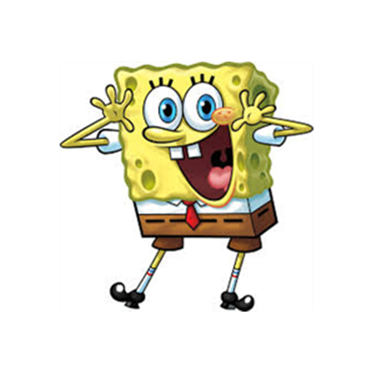

Junior Software Developer
International, bi-lingual Computer Science graduate keen to learn new technologies and work as part of a team. I’m particularly interested in front-end and client facing application development.
Wroclaw University of Science and Technology – Bachelor of Computer Science
October 2013 – July 2017
• Worked as part of a team building a smart home consumer product in collaboration with Thaumatec company, responsible for the front end, writing JavaScript HTML and CSS
• Designed and built a web page for the company using CSS, HTML and Wordpress
• Designed and built a dynamic web form for data capture using CSS, HTML, and PHP • Fixed bugs on customer websites, and im
• Part of an agile software engineering team building a product for managing gyms • Worked on the Java backend, reporting, and charting data features on the web based front end using SQL and the Vaadin framework • Set up Linux based servers, gaining knowledge of the command line and Linux system administration
• Managed, organised and sorted data • Accurately transferred data from paper archives to a new digital system
opis
opis
opis
opis
Panasonic Kid Witness News, Tokyo 2009 | Grand Prix – Best Documentary – video editor